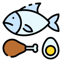
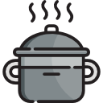
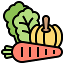
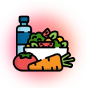

O que é o Índice Glicêmico?
Indica a velocidade com que o carboidrato de um alimento se transforma em açúcar (glicose) no seu sangue. Ele é comparado à glicose pura (ou ao pão branco), que têm valor de referência 100.
Fatores que influenciam o Índice Glicémico dos alimentos

Combinação com Proteínas e Gorduras
Acompanhar carboidratos com fontes de proteína ou gorduras boas reduz o impacto glicémico da refeição.

Tempo de cozimento
Quanto mais cozinhado for o alimento (como a massa muito cozida), mais fácil torna-se a digestão do amido, aumentando o seu IG.
Acidez
Ingredientes ácidos, como limão ou vinagre, reduzem a velocidade do esvaziamento gástrico, diminuindo o IG da refeição.

Presença de Fibras
Quanto mais fibras o alimento contiver, mais lenta será a digestão e menor será o pico de glicose no sangue.
O que é Carga Glicêmica?
É a medida mais precisa para o seu dia a dia, pois avalia o impacto real da porção de alimento que você realmente consome. Ela calcula o efeito da porção que você come, multiplicando a velocidade (IG) pela quantidade de carboidrato daquele prato. É o cálculo ideal para evitar picos de insulina sem precisar passar fome.
Por que calcular?
Equilibrar a carga glicêmica das suas refeições ajuda a prevenir e controlar o diabetes, evita o acúmulo de gordura abdominal, controla a ansiedade por doces e garante mais disposição ao longo do dia.
Por Que usar o nosso calculador?
Resultados Instantâneos
Calcule o impacto do seu prato de forma simples e sem complicações.
Alertas Visuais Inteligentes
Identifique rapidamente se a sua refeição é de alto, médio ou baixo impacto glicémico.
Sugestões de Substituição
Descubra alternativas saudáveis e semelhantes para equilibrar as suas refeições sem abrir mão do sabor.
Como funciona?

Seleciona o Alimento e a Quantidade
Pesquisa o alimento na nossa base de dados e indica a unidade ou a porção exata que pretende consumir para obter um cálculo preciso.
Cálculo Automático e Alerta Visual
O sistema processa instantaneamente o impacto no teu sangue e apresenta um indicador visual claro (Baixo, Médio ou Alto) para indicar a glicémica da tua refeição.
Sugestões Inteligentes de Troca
Se o impacto for elevado, a plataforma sugere automaticamente alternativas mais saudáveis e semelhantes com suas respectivas receitas.